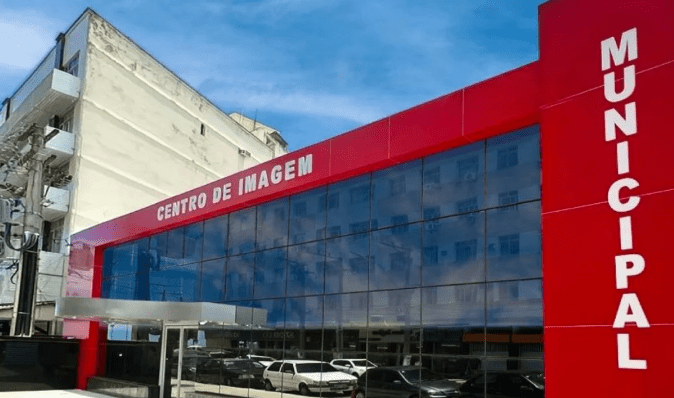
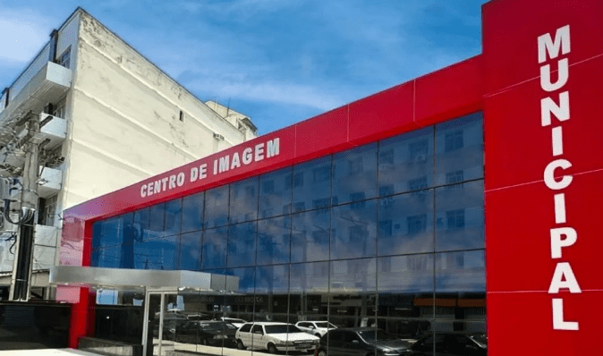

Lagoa hiperssalina!
A lagoa de Araruama é um dos maiores corpos de água hiperssalinas do mundo, ocupando 160 dos 850 quilômetros da região litorânea do RJ. Além de Araruama, ela também banha outros cinco municípios da Região dos Lagos. Sua salinidade se deve ao fato de que a lagoa recebe mais água do mar do que ela consegue escoar, por meio de um estreito canal situado em Cabo Frio. Além disso, o clima seco da região faz com que a água evapore e deixe o sal. Como consequência,a salinidade média da lagoa é de 52%, em contraste com 35% das águas oceânicas, podendo chegar em alguns pontos a 65%. Por conta dessa propriedade, banhar-se nas diversas prais lagunares pode trazer befenícios para a pele, melhorar a cicatrização e até certos reumatismos!
 
